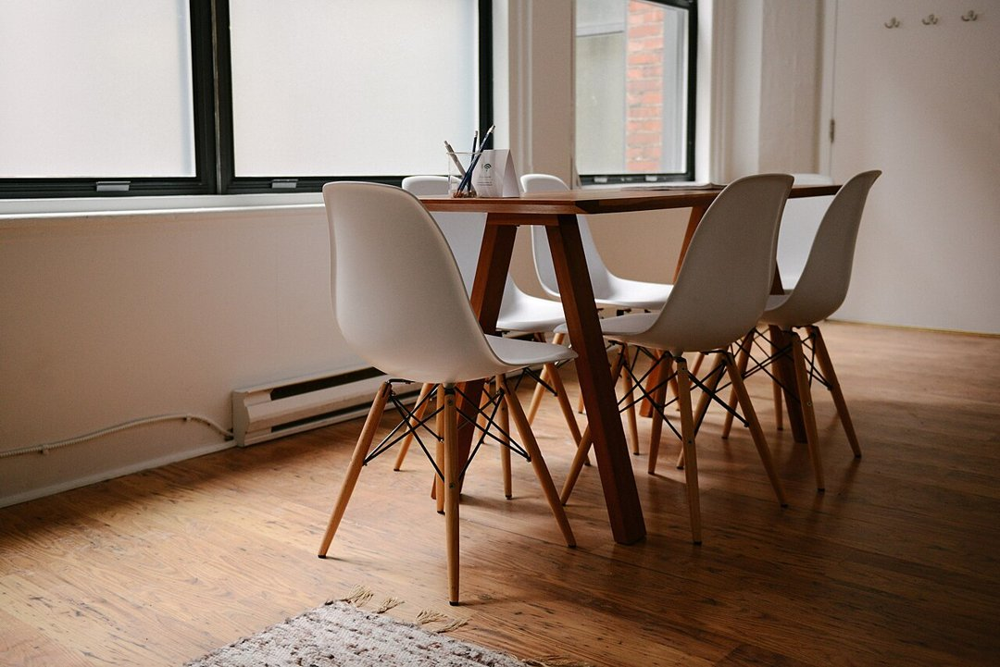

📷 사진 1 자리

▲ 방 안에 놓인 전기난로 · 사진: Breather breather / CC0 / 위키미디어 공용
장롱에 넣어 둔 전기장판을 다시 까는 11월부터 전열 제품 화재가 늘어나요. 행정안전부가 지난 5년 치를 따져 보니 불이 난 이유 대부분은 제품 고장보다 쓰는 방법이었어요. 꺼내는 날 5분만 들여 볼 곳이 정해져 있어요.
5년간 2,354건
행정안전부에 따르면 2021년부터 2025년까지 전기장판과 전기난로 화재는 2,354건 났어요. 이 불로 37명이 숨지고 219명이 다쳤어요.
가장 많은 달은 12월과 1월이에요. 보관해 둔 제품을 다시 쓰기 시작하는 11월부터 이미 월평균보다 많이 나요.
가장 흔한 실수
두 제품 모두 화재 원인 1위는 부주의예요. 제품마다 잦은 실수는 달라요.
| 제품 | 부주의 화재 중 가장 많은 원인 |
|---|---|
| 전기장판 | 사용·설치 부주의 87%(532건 중 461건) |
| 전기난로 | 가연물 가까이 둠 51%(674건 중 344건) |
전기장판은 접힌 채로 쓰거나 위에 무거운 물건을 올려 열선이 상하는 경우가 문제예요. 전기난로는 이불, 옷, 커튼 같은 물건이 가까이 있다가 불이 옮겨붙는 경우가 절반이에요.
꺼낼 때 점검표
| 언제 | 확인할 것 |
|---|---|
| 꺼낼 때 | 플러그·전선 피복 벗겨짐, 장판 접힌 자국 |
| 깔 때 | 접히지 않게 펴기, 위에 무거운 물건 두지 않기 |
| 난로 켤 때 | 주변 이불·옷·커튼 치우기 |
| 오래 쓸 때 | 높은 온도면 타이머 맞추기 |
전선이 벗겨졌거나 장판에 그을린 자국이 보이면 그대로 쓰지 말고 수리를 맡기거나 바꾸는 편이 안전해요.
전기장판 부주의 화재의 87%가 사용·설치 단계에서 났다는 건 새 제품으로 바꾸는 것보다 침대 위 습관을 바꾸는 쪽이 더 효과가 크다는 얘기예요. 장판 위에 접은 이불이나 책 더미를 올려 두는 일, 난로 앞에 빨래를 너는 일만 줄여도 두 제품의 가장 흔한 화재 원인을 비켜 갈 수 있어요.
겨울철 화재는 12월과 1월에 가장 많으니 지금 한 번 점검한 제품도 한겨울에 한 번 더 살펴보세요.
함께 보면 좋은 이슈